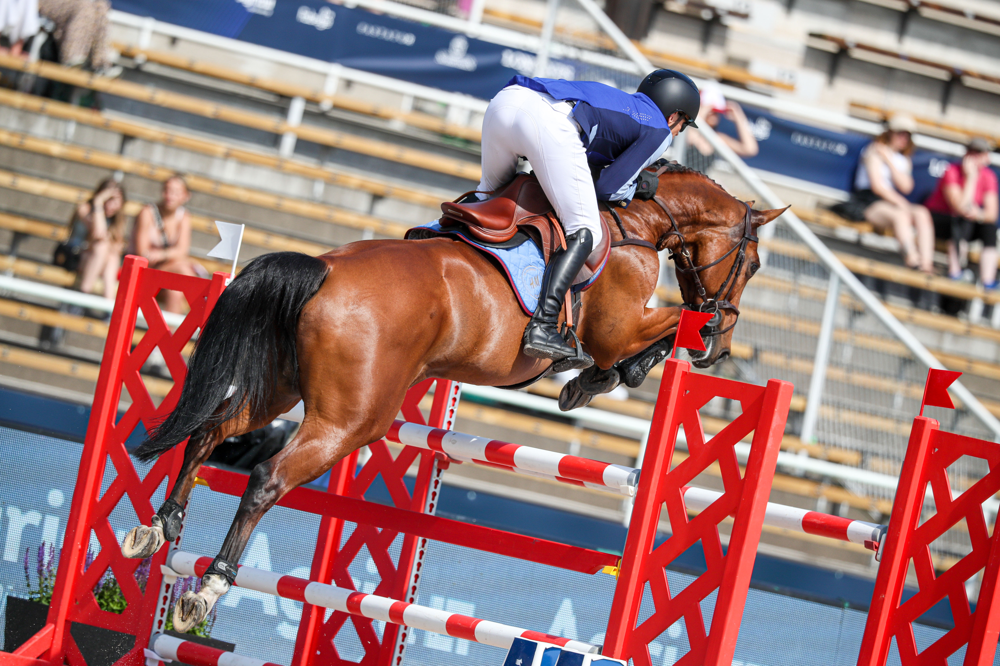

José Bono firma un segundo puesto en el Gran Premio del CSI2* de St. Tropez
El jinete español José Bono logró subir al segundo cajón del podio en el Gran Premio del CSI2* de St. Tropez, celebrado en la localidad francesa de la Costa Azul.

Uso editorial
El jinete español José Bono logró subir al segundo cajón del podio en el Gran Premio del CSI2* de St. Tropez, celebrado en la localidad francesa de la Costa Azul. La actuación del binomio español en la prueba reina del concurso le permitió colocarse entre los mejores clasificados de una cita que reunió a jinetes de distintos países en el escenario mediterráneo.
El CSI2* de St. Tropez forma parte del circuito internacional de salto de la FEI y ofrece a los binomios una exigente competición en pruebas de nivel medio. El segundo puesto obtenido por Bono supone un resultado destacado en una jornada que pone fin al programa de salto del concurso galo.
— Redacción de Hípica al Día